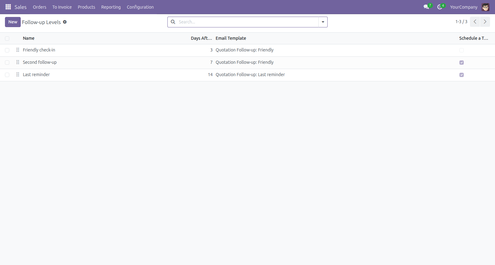
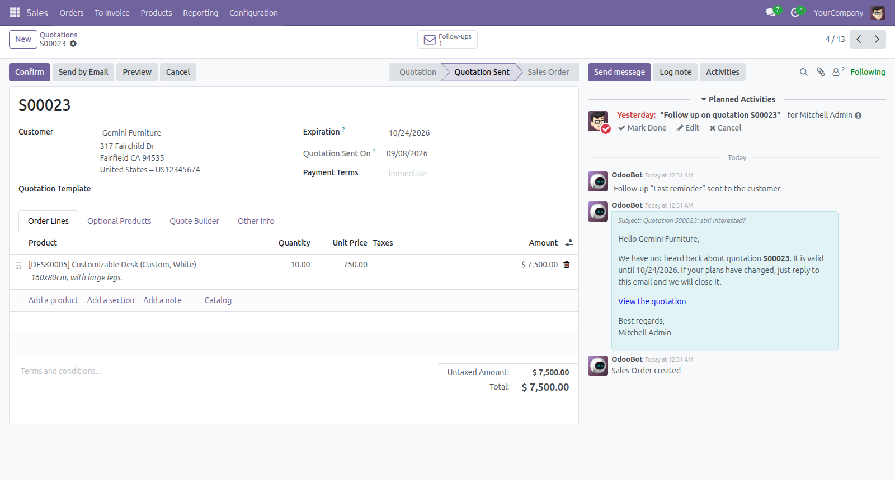
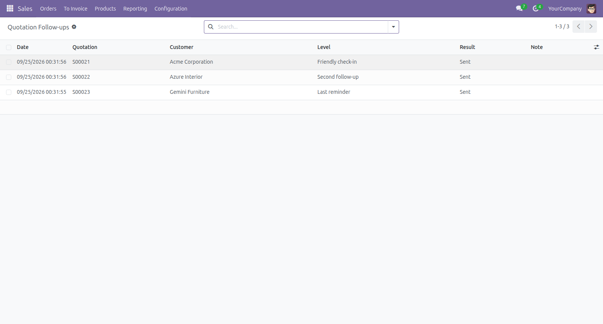
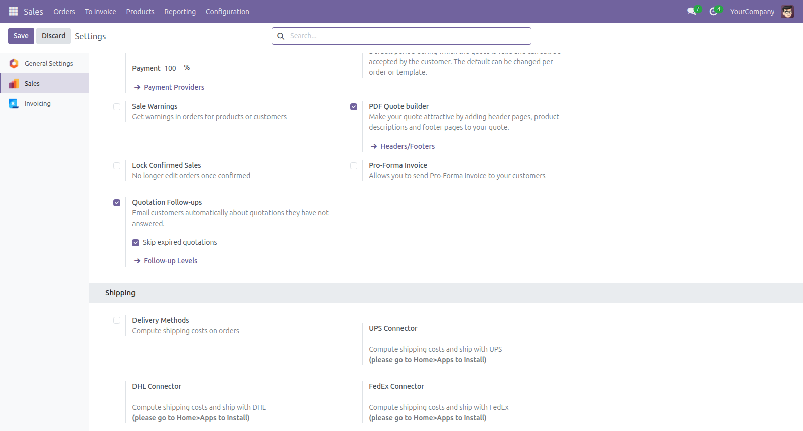

Follows up automatically on quotations that were sent but not answered, and stops the moment the customer replies.
Odoo 18.0 and 19.0 · Community and Enterprise · LGPL-3
A friendly check-in after 3 days, a second follow-up after 7, a last reminder after 14: each level has its own email template, and can also schedule a To-Do for the salesperson.

Every day, each sent quotation gets the highest level it has reached, once. If follow-ups did not run for a week, the customer still receives a single email. Each follow-up is noted in the chatter, and the quotation shows when it was sent and how many follow-ups went out.

Every follow-up is logged as sent or failed, with the reason. A failed email never stops the others.

Turn follow-ups on or off and choose whether expired quotations are skipped, from the Sales settings. A salesperson can also send the next follow-up at once with Actions > Send follow-up now.
